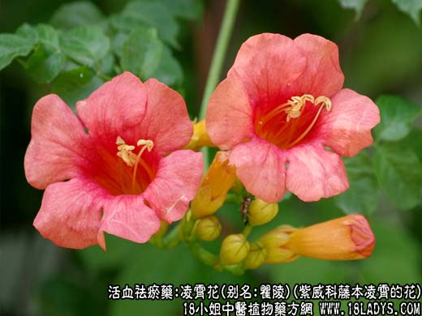
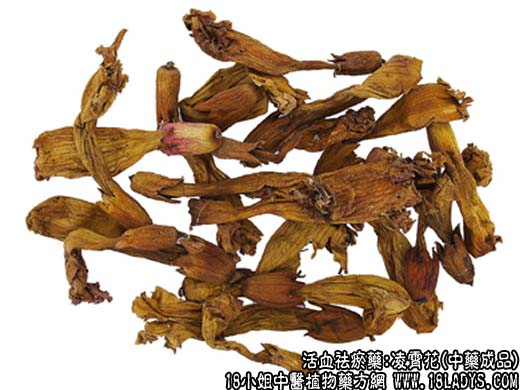

【功效与作用】
凌霄花，别名：瞿陵、陵苕、武威、芰华、陵居腹、五爪龙、吊墙花、白狗肠、上树龙、杜灵霄花、上树蜈蚣、鬼目、凌霄、美洲凌霄、陵霄花、紫葳、紫葳华、堕胎花、碎骨风、藤萝花、藤萝草，为紫威科藤本植物凌霄的花。辛，微寒。归肝、心包经。
1．祛瘀通经：用于血滞经闭，常配当归，红花，赤芍，刘寄奴等；症瘕结块，可与鳖甲，庶虫，丹皮等同用。如（沈氏尊生<紫葳散>）治经水不来，发热腹胀。
2．凉血祛风：用于周身风痒，可单用本品水煎服。
【药物形态】
1.凌霄：多皱缩卷曲，黄褐色或棕褐色，完整花朵长4～5cm。萼筒钟状，长2～2.5cm，裂片5，裂至中部，萼筒基部至萼齿尖有5条纵棱。花冠先端5裂，裂片半圆形，下部联合呈漏斗状，表面可见细脉纹，内表面较明显。雄蕊4，着生在花冠上，2长2短，花药个字形，花柱l，柱头扁平。气清香，味微苦、酸。2.美洲凌霄完整花朵长6～7cm。萼筒长1.5～2cm，硬革质，先端5齿裂，裂片短三角状，长约为萼筒的1/3，萼筒外无明显的纵棱；花冠内表面具明显的深棕色脉纹。
【药效鉴别】凌霄花活血，凉血祛风，治周身风痒，遇热更甚。
【临证应用】主半身不遂，肢软无力，属气虚血瘀，脉络痹阻型。本品120g、黄芪90g、防风，桂枝各5g，母鸡1只，煎汤去油，用汤煮药，一次服完，4—5天1次。
【药理作用】具有抗菌、利尿等作用。
【化学成分】含挥发油、黄酮类等成分。
【用量用法】3——15g，水煎服，或入剂。外用适量。